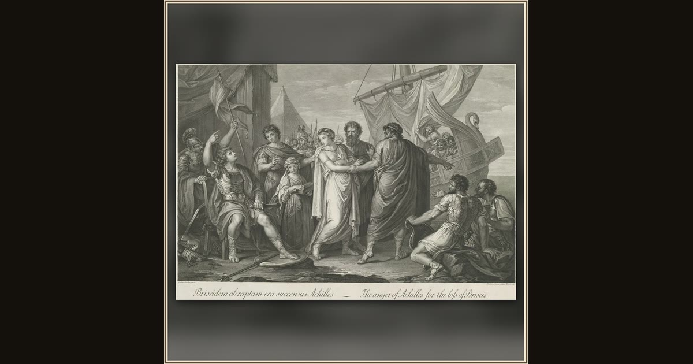

Briseidem ob raptam ira succensus Achilles / The anger of Achilles for the loss of Briseis
Domenico Cunego, after Gavin Hamilton · 1769 · rijksmuseum
Agamemnon's heralds lead Briseis away while Achilles sits by his tent in anger; the print's title calls it the anger of Achilles for the loss of Briseis (1.345–348) Explore its place in Homer's Iliad, Book I, line 345.